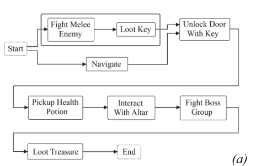

Document
Paper here!
Notes
My own notes
- I do not think this paper is related to what we achieve since it is
A brief summary
-
Abstract
- The work is on a controllable level generator. The output of PCG will be somehow designed.
-
Introduction
- PCG is used in order to generate fast and reliable levels, variable content, and player-centric content.
- However, to benefit from the things above, PCG should be controllable.
- Gampelay grammar: Designer-expressed constraints for level.
- Action graph: Gameplay grammar + graph of player actions.
- To demonstrate, dungeon levels are used. Dungeons are RPG levels, consist of sequences of challanges.
-
Gamplay Grammars
- Typically, the geometry and content of the game follows gameplay requirements.
- Gameplay grammars include an action(eg fighting) and sequencing, relationship and content(eg fighting a dragon)
- Gameplay is a set of actions that can be performed by the player in game.
- Actions can compose in order to create another actions.
- Example: Acquire key = Kill an enemy -> Loot key from body
- Example: Enter locked chamber = (Acquire key -> Unlock door -> Move through doorway) || (Climb on roof -> Enter chimney)
- Also, it is possible to create conditional actions.
- Example: Acquire key = if difficulty is 25: ((Kill enemy -> Loot key from body)||(Distract enemy -> steal key)), else:(Check under doormat -> pickup key)
- After expressing design constraints, you need to create a graph of actions starting from an initial one.

-
Case Study: Dwarf Quest
- Space assignment converts nodes into rooms.
- Layout pre-processing converts the graph into a planar graph, and reduces edges to a maximum of 4.
- Layout solving creates an orthagonal graph from the planar graph. This is the 2D grid map.
- Layout post-processing optimizes the grid map (ie reduce too long hallways).
Go back to main page